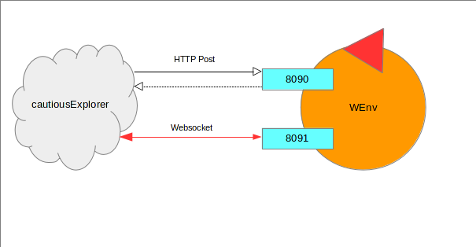
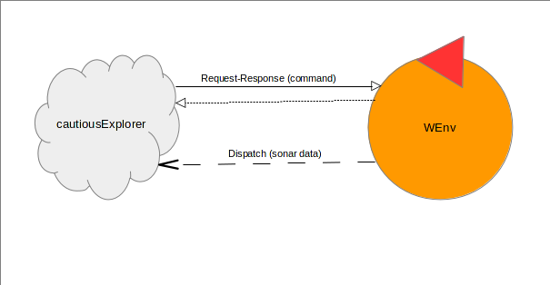
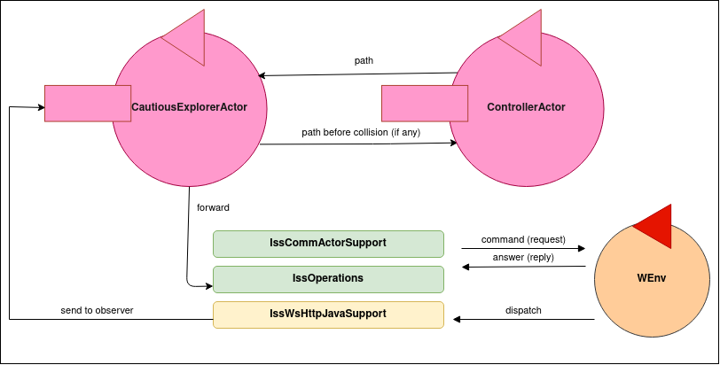

Design and build a software system that allow the robot described in
VirtualRobot2021.html
to exibit the following behaviour:
the robot lives in a rectangular room, delimited by walls that includes one or more devices (e.g. sonar) able to detect the presence
of obstacles, including the robot itself;
the robot has a den for refuge, located in the position shown in the picture
the robot works as an explorer of the room. Starting from its den, the goal of the robot is to
create a map of the room that records the position of the fixed obstacles.
The presence of mobile obstacles in the room is (at the moment) excluded;
since the robot is 'cautious', it returns immediately to the den as soon as it finds an obstacle.
It also stops for a while (e.g. 2 seconds), when it 'feels' that the sonar has detected its presence.
Delivery
The customer requires to receive at 12 noon on April 6 a file named
cognome_nome_cea.pdf
including a (synthetic) description of the project (preceded by a proper analysis of the problem)
based on components of type ActorBasicJava
and a reference to a first working prototype (even with limited capabilities) of the system.
Meeting
A SPRINT-review phase with the customer is planned (via Teams) at 5.15 pm on April 6.
Requirement analysis
Names and verbs analysis
Robot: Any system that moves after receiving certain commands. Rectangular room: The rectangular environment (delimited by walls) in which the robot lives. Sonar: A device capable of detecting the position of the robot in the room. Den: The point of departure and return of the robot within the room. It is located in the upper left corner of the room. Fixed obstacle: Any wall or object that obstructs the robot's path within the room. The position of these obstacles is not known but does not change over time. Mental map: The map of the room from the point of view of the robot. This map must faithfully reproduce the position of obstacles within the room.
Able to detect its presence: The sonar is able to detect the position of the robot in the room by means of sensors. The robot moves: The robot must be able to move forward or backward and turn left or right, as desribed in VirtualRobot2021.html. To find the fixed obstacles: When the impact sensors of the robot detect a collision with an obstacle the position of the obstacle should be saved in the mental map. Returns immediately to the den: As soon as possible the robot must follow a path to return to the starting position. Remember: The mental map should not be initialized every time the robot returns to the den. A persistence solution is preferable.
User story 1
A user places the robot in the den and starts the system. The robot starts to move and when it collides with an obstacle it returns to the den.
User story 2
A user places the robot in the den and starts the system. The robot starts to move and when it "feels" the sonar it stops for two seconds.
Test plans
the correctness of the application logic must be tested via software.
Problem analysis
Technologies to adopt and main problems
In the VirtualRobot2021.html the customer states that the robot can receive move commands in two different ways:
by sending messages to the port 8090 using HTTP POST
by sending messages to the port 8091 using a websocket
Furthermore, as explained in the file mentioned above, after executing the command the robot sends a response containing one of the following values: "true", "false", "halted", "notallowed".
The communication therefore takes place according to a request-response pattern.
However, sonar data are sent only on port 8091 with the WebSocket protocol, so to meet the requirement relating to the reception of sonar data we should also process these dispatch messages. It is recommended the use of the Websocket protocol in order to process also sonar data and other possible data in future requirements.
With respect to the technological level, there are many libraries in many programming languages that support the required protocols.
Relevant aspects
The application should remember the position of the obstacles found in order to avoid them in future runs.
The mental map could also be used to return to the den with a different path from the outward one (i.e. running a shortest-path search in order to find the more convenient path).
In order to build a consistent mental map in several runs the application should move the robot in an organized way (e.g. avoid random path).
When the sonar data are detected our application should stop to send commands to the robot for 2 seconds.
Abstraction gap
First of all, the problem introduces an abstraction gap on the communication protocol (HTTP Post or websocket). Furthermore, the logical interaction can be request-response or dispatch, so we introduce this second abstraction gap.
Logical architecture

1. Protocols

2. Logical interaction
We observe that:
The specification of the exact 'nature' of our cautiousExplorer software is left to the designer. However, we can say here that is it not a database, or a function or an object.
Useful resources
The following resources could simplify the development of the application:
The expected time required for the development of the application is (no more than) 1 day.
Test plans
Collision test (User story 1)
We put the robot on the den. A basic test consists in moving the robot forward with the “moveForward” command until it collides with an obstacle, after the collision the robot must return to the starting position by retracing the path backwards with the “moveBackward” command.
For example, we can assign the time T to both moveForward and moveBackward command, then we can count the number (N) of moveForward command sent to the robot before the collision and then we should send to the robot N moveBackward commands.
So, we can progressively build a string adding "w" at each moveForward, then at each moveBackward command we should add "b" to the string. At the end the string should matches the regex "^w+b+$" and the count of "w" should be equals to the count of "b".
Sonar data test (User story 2)
To do.
Project
The first prototype of the application should be composed by 3 main entities:
The Ws / HTTP support
The ControllerActor: this actor starts and send to the CautiousExplorerActor a path that the robot must take.
The CautiousExplorerActor: this actor receive the path and send the commands to the robot to follow the path. If a collision happens then this actor send the inverse command to the robot to come back to den; if a sonar data is received the actor stops to send command for two seconds. At the end the actor send to its observer (the CautiousExplorerActor) the path effectively followed by the robot (e.g. a "subset" of the path received).

A more accurate implementation should revise the ControllerActor logic and update also the mental map.
Testing
Deployment
The deployment consists in the commit of the application on a project named it.unibo.cautiousExplorerActors of the PersampieriLorenzo repository.
The final commit commit of the first prototype of the application has done after 4 hours of work.
Maintenance
By Lorenzo Persampieri email: lorenzo.persampieri@studio.unibo.it